Flow Builder: Visual Pipeline Designer & Runtime Orchestration
Modern, Zero-Dependency ETL & Workflow Engine in Go
"Slashing ETL Madness with Go, HTMX, and Declarative Pipelines"
- Single-Binary Engine: No Python runtimes, Celery workers, or JVM footprint.
- Embedded HTMX Visual Builder: Interactive web studio served directly from the Go binary (
flow -builder). - Live Bidirectional XML Sync: Visual drag-and-drop synchronized in real time with Git-friendly declarative XML.
- Built-in Quality Gates & Telemetry: Full preflight validation, row-level telemetry, and compliance logging out of the box.
What is Flow Builder Doing?
An Embedded Visual Studio for Declarative Data Pipelines
Flow Builder bridges the gap between raw XML configuration and visual workflow orchestration. It runs an embedded local web server backed by an embedded SQLite database (flow_builder.db), allowing data engineers to visually compose, validate, test, and execute pipelines without writing boilerplate code.
flowchart TB
subgraph UI ["Flow Web Builder UI"]
direction LR
Palette["<b>Component Palette</b><br/>• Variables<br/>• Databases<br/>• Preflight Checks<br/>• Control Flow<br/>• Database & SQL<br/>• Key-Value Store"]
Canvas["<b>Interactive Canvas</b><br/>1. Variables (<variables>)<br/>2. Databases (<databases>)<br/>3. Preflight (<preflight>)<br/>4. Main Flow (<flow>)<br/><br/>[Drag / Reorder / Edit / Del]"]
Preview["<b>Live XML Preview</b><br/><pipeline><br/> <variables>...<br/> <databases>...<br/> <preflight>...<br/> <flow>..."]
end
Engine["<b>Embedded Execution Engine</b><br/>• Preflight Quality Gates<br/>• Real-Time Stream Telemetry"]
UI --- EngineCore Capabilities at a Glance:
- Interactive Component Toolbox: Instant drag-and-drop or click-to-add for variables, database connections, loops, scripts, and SQL tasks.
- Visual Hierarchy Canvas: Organizes pipelines into 4 distinct phases: Setup, Connections, Preflight Quality Gates, and Execution Flow.
- Real-time Live XML Preview: Instant validation, bidirectional feedback, copy, and export.
- Execution Dashboard: Run entire pipelines or preflight checks in isolation with live stream logs and row-count metrics.
The Builder UI: Unified 3-Panel Studio
Default Slate Theme with Live Synchronization
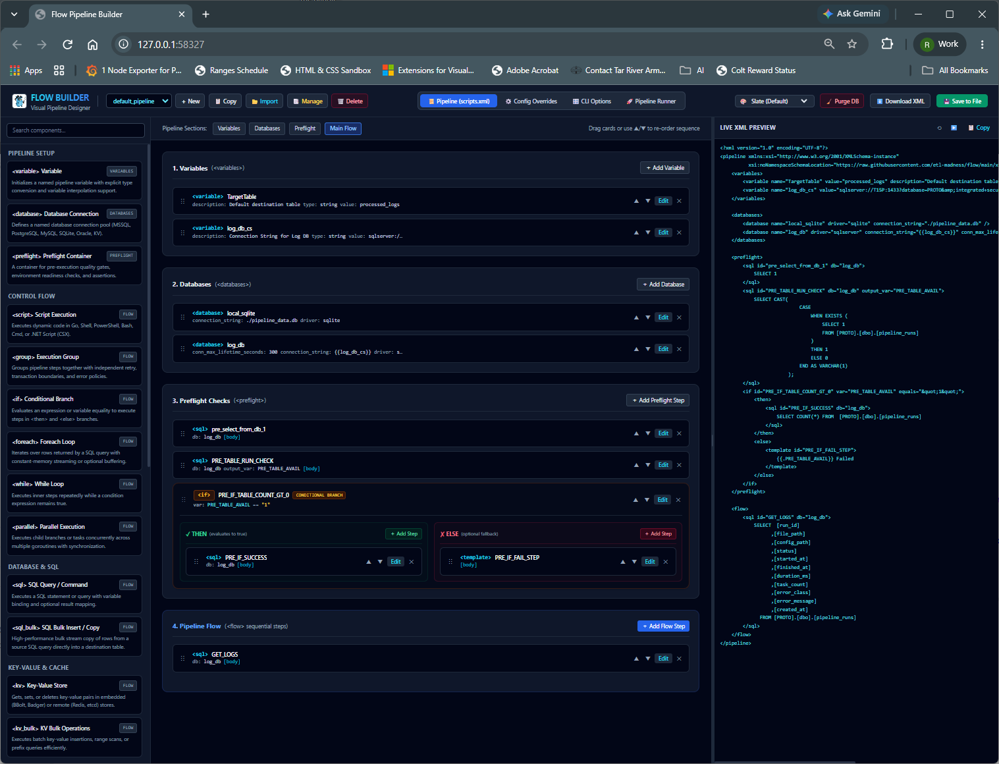
What It's Doing:
- Left Panel (Component Palette): Provides organized categories of pipeline primitives:
- Pipeline Setup:
<variable>,<database>,<preflight> - Control Flow:
<script>,<group>,<if>,<foreach>,<while>,<parallel> - Database & SQL:
<sql>,<sql_bulk> - Key-Value & Cache:
<kv>,<kv_bulk> - Templates & Storage:
<template>,<excel_write> - Center Panel (Interactive Canvas): Displays the active pipeline split into clear execution stages:
<variables>: Configuration variables likeTargetTableand connection strings (log_db_cs).<databases>: Configured connection pools (local_sqlite,log_db).<preflight>: Pre-execution diagnostic checks (pre_select_from_db_1,PRE_TABLE_RUN_CHECK).<flow>: Main execution tasks (GET_LOGS).- Right Panel (Live XML Preview): Renders the exact schema-compliant declarative XML in real time with copy and export controls.
- Top Bar Controls: Fast pipeline switching, tab navigation (
scripts.xml,Config Overrides,CLI Options,Pipeline Runner), and database management (Purge DB).
Theme Customization: Visual Studio Light
High-Contrast Readability for Daytime Workflows
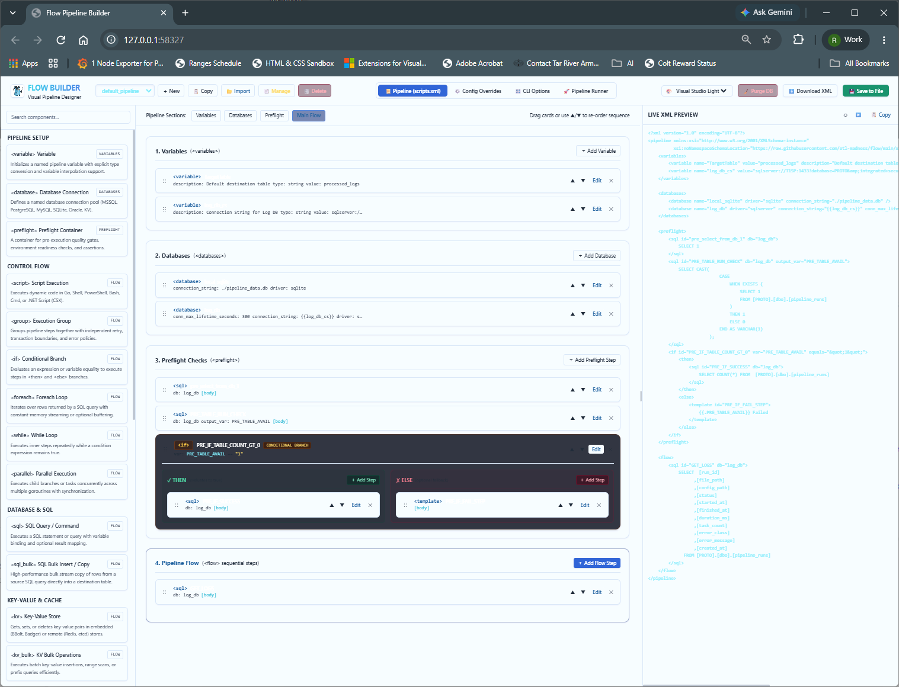
What It's Doing:
- Instant Dynamic Theme Switching: Powered by HTMX and CSS variables without page reloads.
- Clean Daytime Ergonomics: Crisp borders, high-contrast typography, and accessible syntax coloring in the Live XML pane.
- Identical Functional Parity: Full access to component insertion, drag reordering, and runner telemetry across all visual themes.
Theme Customization: Visual Studio Dark
Low-Glare Visual Studio Dark Aesthetic
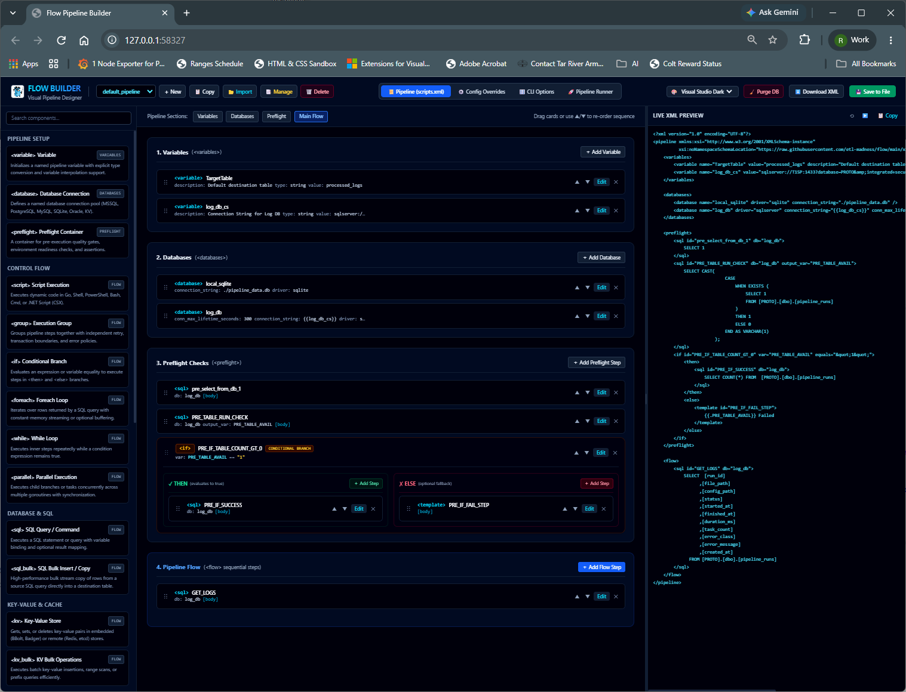
What It's Doing:
- Developer-Centric Dark Mode: Modern dark charcoal surfaces with vibrant neon status indicators (blue, cyan, emerald, amber).
- Code Editor Aesthetics: Matches standard VS Code dark styling for data engineers spending extended sessions designing complex ETL pipelines.
- Syntax-Highlighted Live Code: Right pane provides clear, syntax-highlighted XML markup reflecting every card modification instantly.
Component Search & Pipeline Editing
Real-Time Filtering & Active Pipeline Context
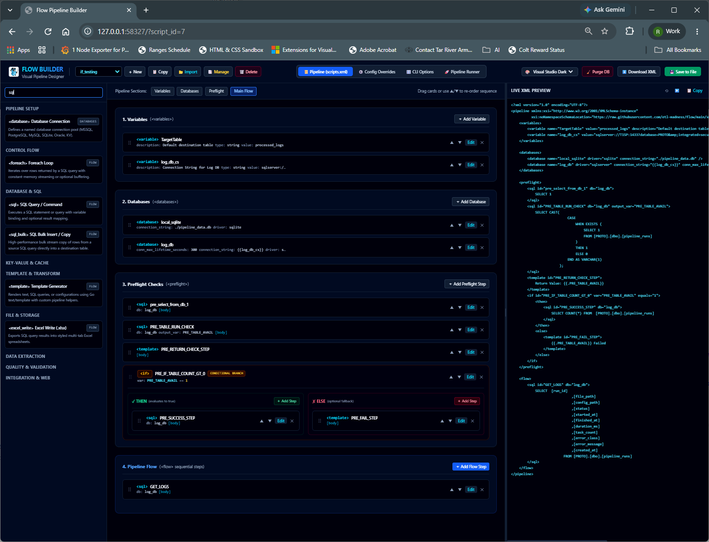
What It's Doing:
- Instant Palette Search: Typing
"sql"into the component search bar dynamically filters available components down in real time. - Pipeline Selector: Active pipeline
if_testingloaded from SQLite storage (flow_builder.db). - Visualizing Complex Control Flow:
- Shows a conditional branch card (
<if> PRE_IF_TABLE_COUNT_GT_0). - Condition expression:
var: PRE_TABLE_AVAIL == '1'. - Distinct colored sub-branches:
- Green Branch:
<then>containingPRE_SUCCESS_STEP - Red Branch:
<else>containingPRE_FAIL_STEPwith template fallback{{.PRE_TABLE_AVAIL}} Failed.
- Green Branch:
- Reordering & Editing: Every card features drag handles, up/down arrows (
▲▼), in-lineEditdialog, and✕removal.
Nested Step Insertion: Dynamic Containers
Inserting Primitives Inside Conditional & Loop Blocks
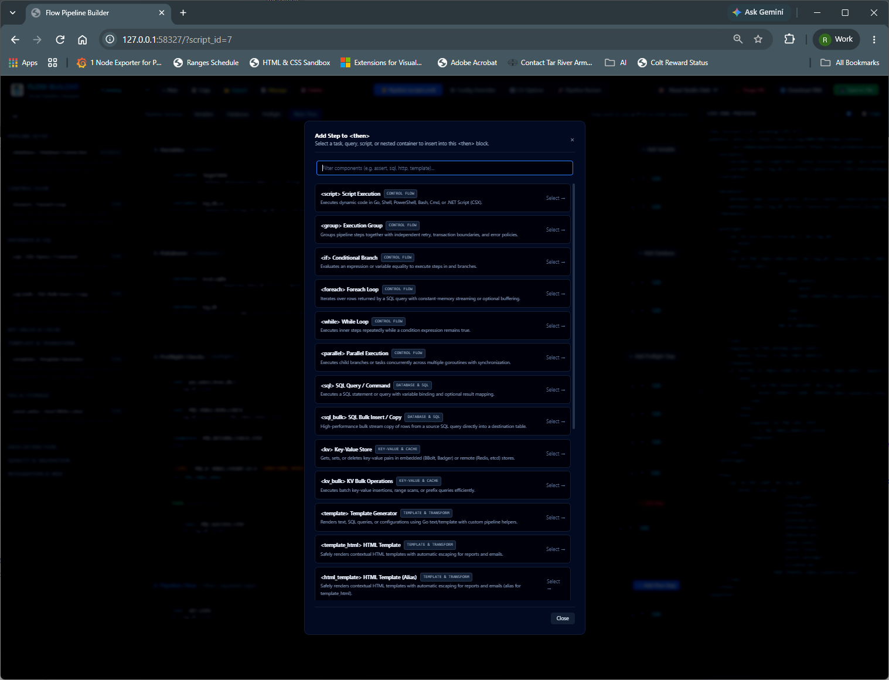
What It's Doing:
- Scoped Component Insertion: The
Add Step to <then>modal allows targeted insertion of any task directly inside nested branch containers. - Searchable Step Catalog: Instant filter bar (
Filter components (e.g. assert, sql, http, template)...). - Supported Nested Primitives:
<script>: Execute embedded Go, Shell, PowerShell, Bash, Cmd, or C# (.NET CSX) code.<group>: Nest tasks with independent retry policies, transaction rollback boundaries, and error policies.<if>: Multi-level nested conditional logic.<foreach>/<while>: Iterative streaming data loops over SQL result sets.<parallel>: Concurrent multi-goroutine execution with synchronized joins.<sql>/<sql_bulk>: High-throughput query execution and direct table-to-table stream copying.<kv>/<kv_bulk>: Key-value operations on embedded BBolt/Badger or external Redis/etcd.<template>/<template_html>: Contextual template rendering with automatic escaping.
Database Connection Management
Native Multi-Engine Dialect Pooling & Secret Interpolation
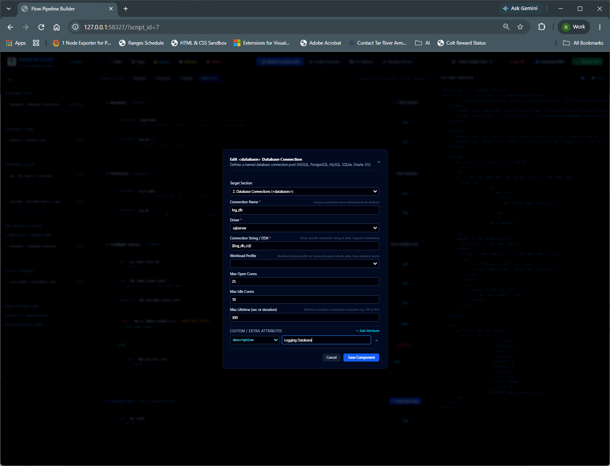
What It's Doing:
- Named Connection Definition: Configures connection pool
log_dbassigned to the<databases>section. - Cross-Dialect Drivers: Built-in support for
sqlserver,postgres,mysql,sqlite,oracle, andkv. - Dynamic Secret Interpolation:
- Supports variable expansion syntax
{{log_db_cs}}. - Resolves secrets up to 3 levels deep across base XML, environment overrides (
-config), and CLI arguments (-vars). - Protects sensitive production credentials from hardcoded Git commits.
- Workload Tuning Profiles: Optimizes connection pooling for
oltp,bulk,analytics, orbatch. - Connection Lifecycle Limits:
- Max Open Connections (
25) - Max Idle Connections (
10) - Max Lifetime Duration (
300seconds) - Custom Dynamic Attributes: Expandable key-value pairs (e.g.
description: Logging Database).
Pipeline Catalog & Storage Management
Embedded SQLite Storage for Drafts and Production Scripts
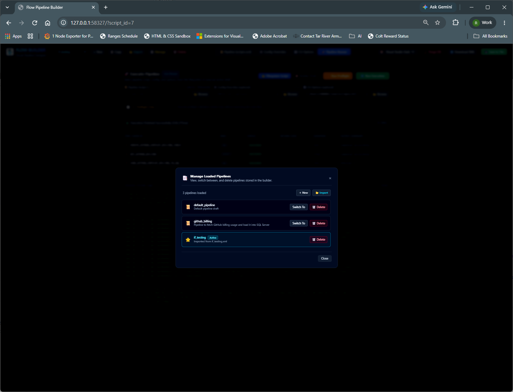
What It's Doing:
- Centralized Pipeline Catalog: The
Manage Loaded Pipelinesmodal lists all pipelines stored in the builder's local SQLite database (flow_builder.db). - Multi-Pipeline Switching:
default_pipeline: Default pipeline draft.github_billing: Pipeline fetching GitHub billing usage and loading into SQL Server.if_testing: Active pipeline imported fromif_testing.xml.- Pipeline Lifecycle Operations:
Switch To: Instant one-click activation of another pipeline in the visual designer.+ New: Spin up clean empty pipeline configurations.Import: Ingest existing XML pipeline files from the local filesystem.Delete/Purge DB: Remove obsolete drafts or reset builder state.
CLI Options File Navigator
Binding Pre-Baked Profiles to Interactive Runs
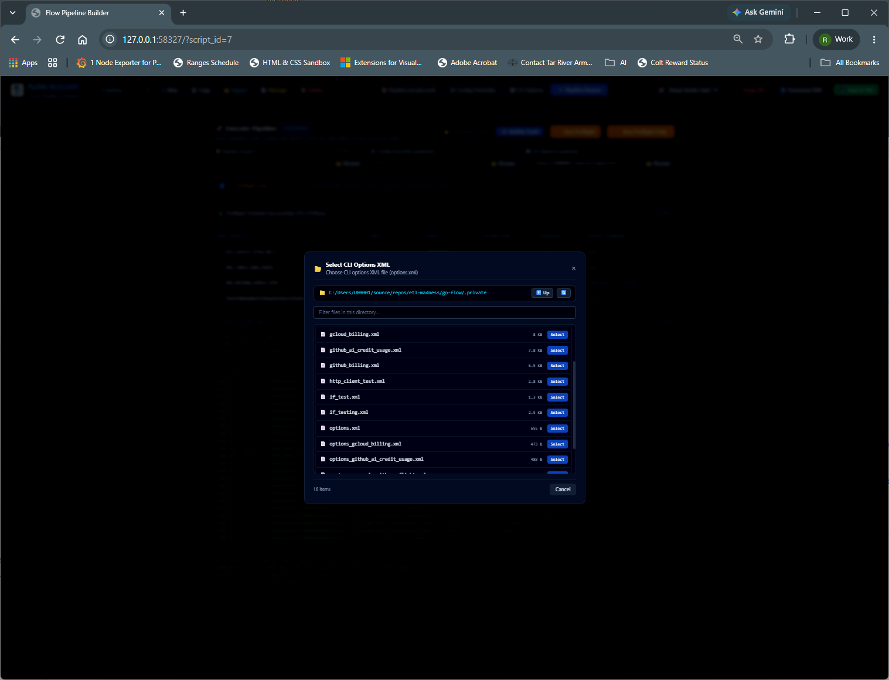
What It's Doing:
- Interactive Directory Navigation: Built-in modal filesystem browser traversing folders (such as
.private/). - Pre-Baked Execution Profiles:
- Selects
-optionsXML files containing pre-configured flags, runtime variables, and connection overrides. - Examples:
options.xml,options_gcloud_billing.xml,options_github_ai_credit_usage.xml. - Zero CLI Friction: Eliminates the need to manually memorize or copy lengthy CLI command flags when testing pipelines in the browser.
Live Execution & Real-Time Telemetry
Interactive Pipeline Runner with Step-by-Step Audit Metrics
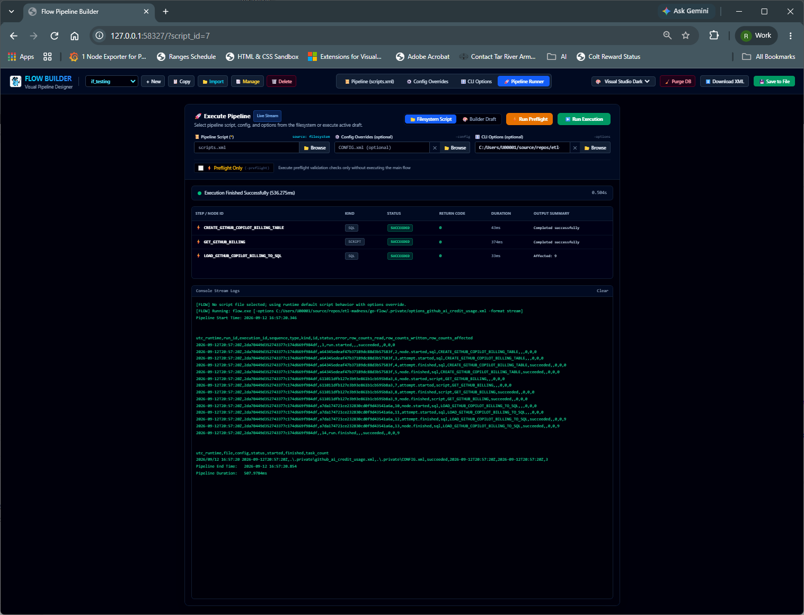
What It's Doing:
- Dual Execution Modes: Select between executing a
Filesystem Scriptor the in-memoryBuilder Draft. - Configuration Binding: Combines pipeline script (
scripts.xml), config overrides (CONFIG.xml), and CLI options (options_github_ai_credit_usage.xml). - Execution Summary Banner: Immediate execution outcome and benchmark timing:
Execution Finished Successfully (536.275ms). - Per-Step Execution Grid:
| Step / Node ID | Kind | Status | Return Code | Duration | Output Summary |
| :--- | :--- | :--- | :--- | :--- | :--- |
|
CREATE_GITHUB_COPILOT_BILLING_TABLE| SQL |SUCCEEDED|0| 43ms | Completed successfully | |GET_GITHUB_BILLING| SCRIPT |SUCCEEDED|0| 374ms | Completed successfully | |LOAD_GITHUB_COPILOT_BILLING_TO_SQL| SQL |SUCCEEDED|0| 33ms | Affected: 9 | - Console Stream Logs: Emits real-time RFC3339 audit telemetry rows with sequence numbers, run IDs, and accurate row tracking (
rows_read,rows_written,rows_affected).
Preflight Validation: Quality Gates
Non-Destructive Fail-Fast Environment Testing
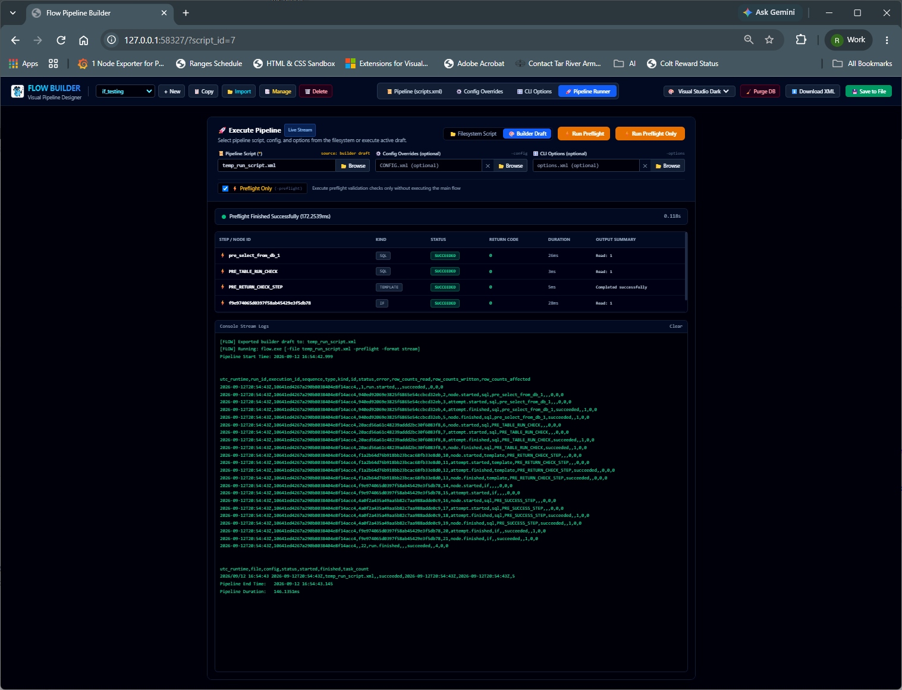
What It's Doing:
- Dedicated Preflight Execution (
-preflight):"Execute preflight validation checks only without executing the main flow"
- Non-Destructive Guarantee:
<flow>data loading nodes are completely bypassed. Only diagnostic checks, database ping tests, and assertions run. - Rapid Diagnostic Results (
172.2539ms): pre_select_from_db_1(SQL, Succeeded, 26ms, Read: 1)PRE_TABLE_RUN_CHECK(SQL, Succeeded, 3ms, Read: 1)PRE_RETURN_CHECK_STEP(TEMPLATE, Succeeded, 5ms)f9e974065d0397f58ab45429e3f5db78(IF conditional branch, Succeeded, 28ms, Read: 1)- Fail-Fast Safety: Catches missing environment variables, unreachable databases, or schema mismatches before executing heavy data transfers.
Options-Driven Preflight & Assertions
Automated Structural Assertions via CLI Profiles
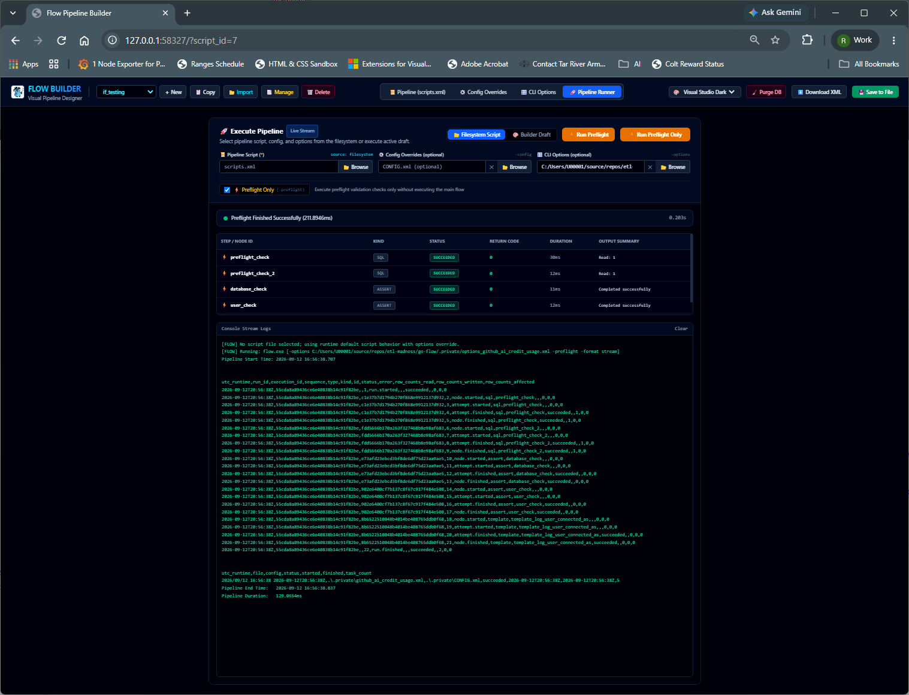
What It's Doing:
- Configuration Profile Validation: Executes preflight checks specified inside
options_github_ai_credit_usage.xml. - Automated
<assert>Quality Gates: preflight_check(SQL check, 30ms, Read: 1)preflight_check_2(SQL check, 12ms, Read: 1)database_check(ASSERT, 11ms, Completed successfully)user_check(ASSERT, 12ms, Completed successfully)- Production Readiness Sign-off: Verifies database availability and permission rights in 211ms before scheduled cron jobs or worker nodes take over.
Summary & Command Reference
Everything You Need to Run Flow and the Visual Builder
Key Capabilities Summary:
- Visual HTMX Studio: Launch with
flow -builderon an ephemeral or designated port. - Declarative XML Schema: Full pipeline reproducibility, version control, and CI/CD friendly.
- Multi-Engine Dialects: Native translation for SQL Server, Postgres, MySQL, Oracle, and SQLite.
- Two-Stage Execution: Standalone
<preflight>quality gates prevent failed batch runs. - Full Compliance Telemetry: Automatic logging to
pipeline_runsandpipeline_eventstables.
Quick Start Commands:
# 1. Launch the Visual Builder web interface
flow -builder -builder-port 8080
# 2. Run Preflight quality validation only (non-destructive)
flow -file pipeline.xml -preflight
# 3. Execute full pipeline with pre-baked options profile
flow -file pipeline.xml -options options.xml
# 4. Run pipeline with runtime variable overrides
flow -file pipeline.xml -vars "TargetTable=prod_orders,BatchSize=10000"